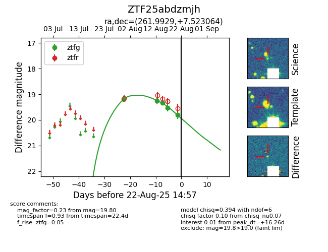

Target ZTF25abdzmjh at 2025-08-22 15:21, see:
FINK: fink-portal.org/ZTF25abdzmjh
Lasair: lasair-ztf.lsst.ac.uk/objects/ZTF25abdzmjh
ALeRCE: alerce.online/object/ZTF25abdzmjh
alt names
ZTF25abdzmjh (ztf,alerce)
coordinates:
equatorial (ra, dec) = (261.9929,+7.52306)
galactic (l, b) = (30.1818,+21.96119)
photometry
last atlaso=19.42, ztfg=19.80
3 atlaso, 5 ztfg detections
